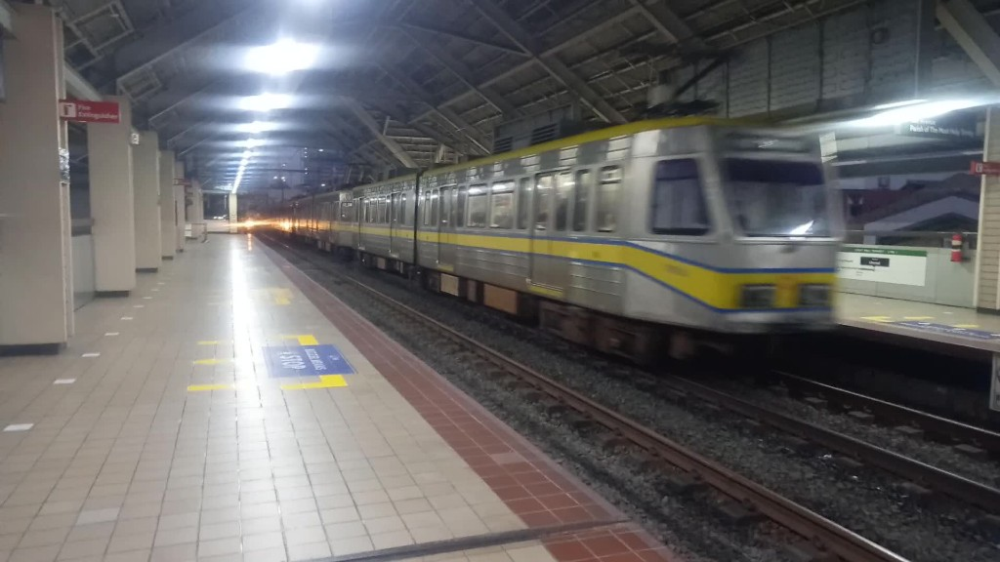
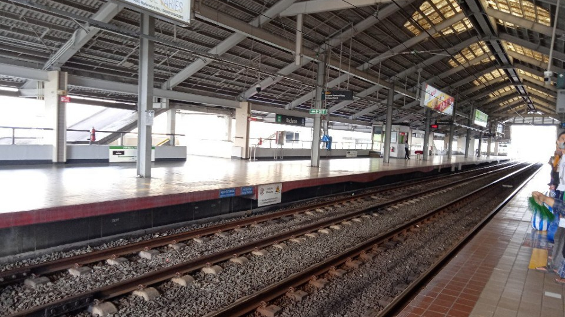
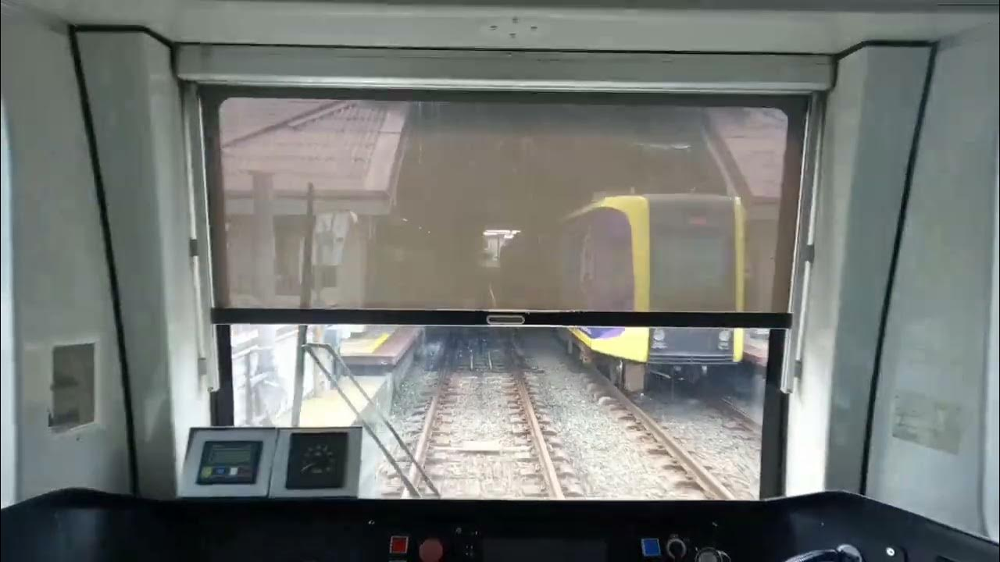
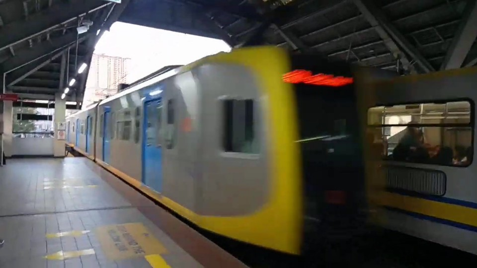
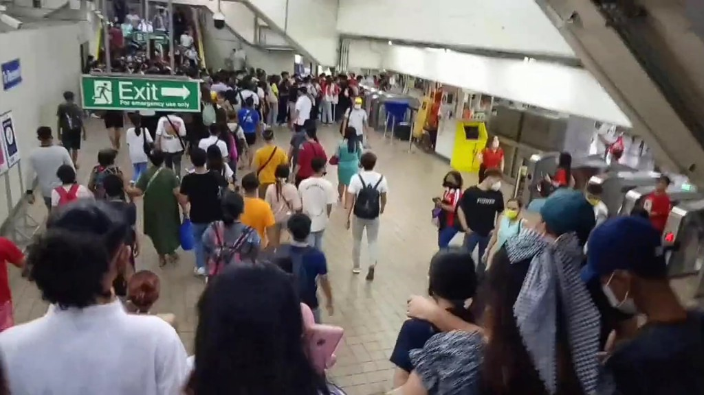
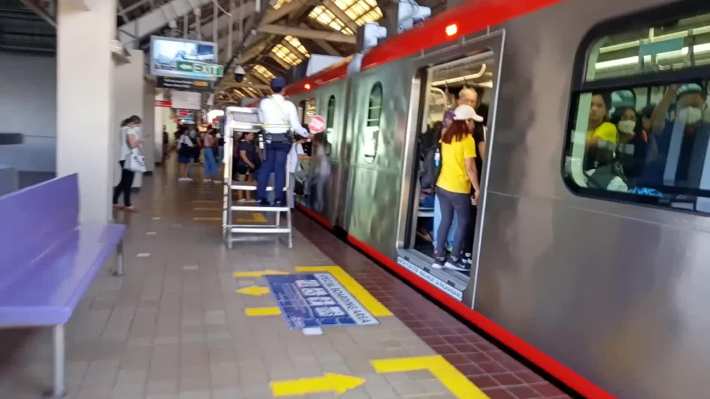
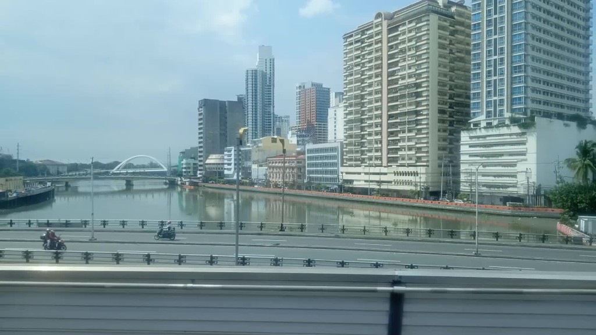

LRT-1 rides
Back
Home
Table of contents:
Home
Table of contents:
- Libertad to EDSA
- Baclaran to Libertad
- EDSA to Libertad
- Libertad to Baclaran
- Libertad to Baclaran to EDSA
- EDSA to Carriedo
- Doroteo Jose to EDSA
- Libertad to Carriedo
- Doroteo Jose to Libertad
- Libertad to Redemptorist
- Redemptorist to Libertad
- Libertad to Redemptorist to EDSA
- EDSA to Redemptorist to Libertad
- Gil Puyat to Libertad
- Libertad to Vito Cruz
- Vito Cruz to Libertad
- More LRT-1 ride contents
Libertad to EDSA
I decided to commute via the LRT-1 because the waiting lines for jeepneys were getting too long. Marking my first time riding the transit system in four years, I was thrilled to see the familiar trains and stations again. My very first ride of this period took place on November 17, 2022.
I also decided to record a video as the train approached the platform. Initially, I felt hesitant to film out of concern that station security guards might stop him. However, after consulting fellow rail enthusiasts over the following days, I learned that taking photos and videos on the LRT-1 is perfectly fine, as it is considered the most open and unrestricted train line for hobbyists.
I also decided to record a video as the train approached the platform. Initially, I felt hesitant to film out of concern that station security guards might stop him. However, after consulting fellow rail enthusiasts over the following days, I learned that taking photos and videos on the LRT-1 is perfectly fine, as it is considered the most open and unrestricted train line for hobbyists.

2nd gen train at Libertad station on December 14, 2022.
Video 
Since my home was located nearby, EDSA was my most frequent destination. Throughout my regular school days, I consistently commuted along the Libertad-to-EDSA route, right up until my final ride on December 15, 2023.
For more videos of LRT-1 rides from Libertad to EDSA, please click HERE
.
Baclaran to Libertad

Inside of Baclaran station on December 15, 2022.

3rd gen train at Baclaran station on December 15, 2022.
Video
I decided to navigate my way to Baclaran station from EDSA independently to catch a train bound for Libertad. Stepping back into the terminal after several years, I was struck by how massive the station layout felt.
I officially made my return ride from Baclaran to Libertad on December 15, 2022.
For more videos of LRT-1 rides from Baclaran to Libertad, please click HERE
.
EDSA to Libertad
Following my trainspotting sessions, I frequently took the LRT-1 from EDSA to Libertad. This enabled him to take advantage of the high-speed public Wi-Fi available at Libertad station to upload my new videos. I first established this particular routing on February 1, 2023.

Rear cabin view ride on February 1, 2023.
Video
For more videos of LRT-1 rides from EDSA to Libertad, please click HERE
.
Libertad to Baclaran
On February 1, 2023, Justin boarded the LRT-1 at Libertad station with a change of pace: my destination wasn't EDSA, but rather Baclaran, allowing him to experience the ride all the way to the southern end of the line.Unfortunately, starting February 20, my evening trips had to cut short at EDSA station. This adjustment happened because my class dismissal times were pushed back from 5:30 PM to 7:00 PM, matching seasonal daylight shifts in the city. I was eventually able to resume my full travel down to Baclaran on October 25, 2023.

I rode on 3rd gen train going to Baclaran on February 1, 2023.
Video

Crowds lining up to exit the station after tracks were switched to the opposite side on February 13, 2023.
Video
For more videos of LRT-1 rides from Libertad to Baclaran, please click HERE
.
Libertad to Baclaran to EDSA
On September 6, 2023, I boarded a 4th-generation train bound for EDSA, but noticed it was moving slower than usual. Recognizing that the train was decelerating for a track switch prior to Baclaran station, I decided to stay on board as it transitioned over to the northbound platform. This gave him the perfect opportunity to head right back up toward EDSA.
While all the other southbound passengers disembarked at the terminal, I remained in my seat, completing a continuous loop from Libertad to Baclaran and directly back up to EDSA station.
While all the other southbound passengers disembarked at the terminal, I remained in my seat, completing a continuous loop from Libertad to Baclaran and directly back up to EDSA station.

4th gen train departing EDSA station northbound on September 6, 2023
Watch the video HERE
.
EDSA to Carriedo
While commuting to the University of the East for my weekend training programs, I rode the train from EDSA to Carriedo every Sunday from November 5 until December 10, 2023. This marked his very first time visiting Carriedo station, and my first journey past Libertad station in five years.

View of the Pasig River from a northbound 4th gen train on November 5, 2023. Video
For more videos of LRT-1 rides from EDSA to Carriedo, please click HERE
.
Doroteo Jose to EDSA
On November 26, 2023, I took the train from Doroteo Jose back down to EDSA, marking my first time routing between these two specific stations after finishing my training sessions at the University of the East.For more videos of LRT-1 rides from Doroteo Jose to EDSA, please click HERE
.
Libertad to Carriedo
Following my relocation to a new home address, I adjusted my commute to the University of the East. While it served the same purpose as my older EDSA trips, this updated route configuration began directly from Libertad station starting December 17, 2023.For more videos of LRT-1 rides from Libertad to Carriedo, please click HERE
.
Doroteo Jose to Libertad
After completing my training sessions, I would head home via the transit line, consciously setting Libertad as my final stop so I could grab breakfast. Following my move to a new residence, Libertad officially became my primary destination station for going home starting December 17, 2023.For more videos of LRT-1 rides from Doroteo Jose to Libertad, please click HERE
.
Libertad to Redemptorist
Following the official opening of the Cavite Extension Phase 1, I took the opportunity to ride the train out to the new Redemptorist station to attend church services. My inaugural trip down this newly extended section of the line took place on January 5, 2025.For more videos of LRT-1 rides from Libertad to Redemptorist, please click HERE
.
Redemptorist to Libertad
After attending church services, I would take the train back north toward my home in Libertad. During my earlier extension trips, I would typically walk over to Baclaran station first to explore local shops before boarding. However, by June 1, 2025, I began boarding my return trains directly from the Redemptorist station platforms.For more videos of LRT-1 rides from Redemptorist to Libertad, please click HERE
.
Libertad to Redemptorist to EDSA
On May 30, 2025, I planned a trip to EDSA knowing the new extension lines were active. Recognizing that all stations along the Cavite Extension Phase 1 featured a concourse layout that allowed passengers to change platforms without paying a second fare, I rode down to Redemptorist station, walked down to the concourse, crossed over to the northbound platform, and caught a train back up to EDSA.Watch the video HERE
.
EDSA to Redemptorist to Libertad
After visiting EDSA, I made my way back home, mapping Redemptorist station as a structural waypoint in my journey. Mirroring my earlier platform-crossing strategy, I successfully tested this reverse routing for the first time on December 27, 2025.Watch the video HERE
.
Gil Puyat to Libertad
On October 28, 2025, after completing my assessment for the Bookkeeping NC III qualification, I headed home by taking the train from Gil Puyat to Libertad, making it one of the shortest single rides in my transit collection.Watch the video HERE
.
Libertad to Vito Cruz
On March 6, 2026, right after their classes dismissed, me and my classmates caught a northbound train to Vito Cruz. They traveled to the Rizal Memorial Sports Complex to watch and support their classmate competing in a swimming championship.Watch the video HERE
.
Vito Cruz to Libertad
Following the swimming competition on March 6, 2026, I concluded my time as part of the student audience and caught a southbound train from Vito Cruz station to return home to Libertad.Watch the video HERE
.
If you want to watch all of my LRT-1 rides, please click
here .
Also, you can watch my train rides organized by train generation:
1st gen train rides
2nd gen train rides
3rd gen train rides
4th gen train rides
.
Also, you can watch my train rides organized by train generation:
1st gen train rides
2nd gen train rides
3rd gen train rides
4th gen train rides